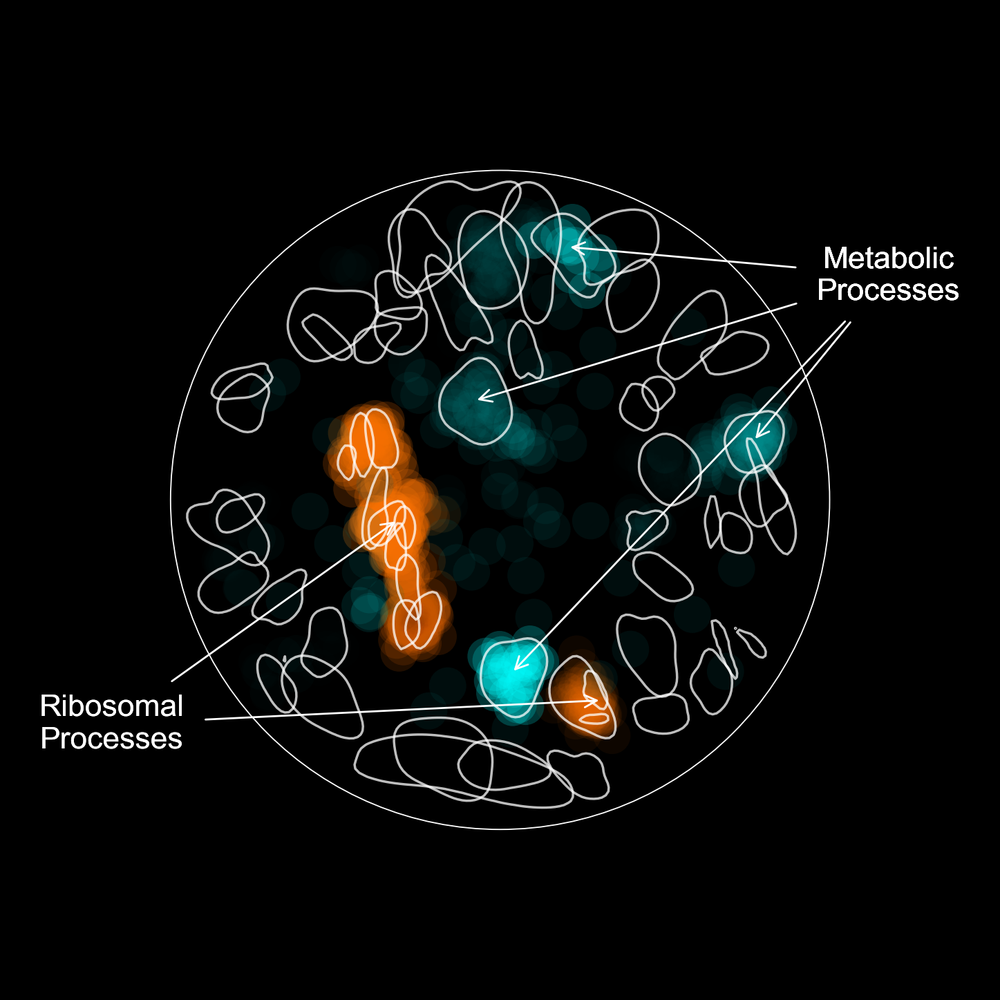

Advanced Plotting¶
Once you're familiar with RISK’s core plotting methods, you can begin layering multiple annotations, subnetworks, and styles to highlight specific biological themes. This section walks through advanced plotting features using a real-world example.
Use Case: Dual Overlay of Coexpression Subgroups¶
In this example, we highlight two functionally distinct sets of genes: - Highly coexpressed nodes - Weakly coexpressed nodes
We annotate each with a distinct color and size overlay, draw the global network structure, and apply clear labeling for biological interpretation.
Step 1: Define Your Subgroups¶
Use lists of node names to define subgroups of interest.
high_coexpression_nodes = ["RPL1A", "RPL2B", "RPL3", "RPL5"]
low_coexpression_nodes = ["YGR103W", "YDL064W", "YML082W", "YOR204W"]
Step 2: Initialize the Plotter¶
We create a new NetworkPlotter instance and set background preferences.
plotter = risk.load_plotter(
graph=graph,
figsize=(16, 16),
background_color="black",
background_alpha=1.0,
pad=0.3,
)
Step 3: Draw the Full Network and Frame¶
plotter.plot_network(
node_colors=plotter.get_annotated_node_colors(),
node_sizes=plotter.get_annotated_node_sizes(),
)
plotter.plot_circle_perimeter(
radius=1.0,
color="white",
linewidth=2.0,
linestyle="solid",
alpha=1.0,
)
Step 4: Highlight Subnetworks¶
Overlay the high and low coexpression groups in distinct styles.
plotter.plot_subnetwork(
nodes=high_coexpression_nodes,
color="lime",
size=225,
alpha=1.0,
)
plotter.plot_subnetwork(
nodes=low_coexpression_nodes,
color="magenta",
size=225,
alpha=1.0,
)
Step 5: Add KDE Domain Contours¶
Highlight enriched domains using KDE-based clustering.
plotter.plot_contours(
levels=5,
grid_size=250,
color=plotter.get_annotated_contour_colors(),
alpha=1.0,
fill_alpha=0.25,
)
Step 6: Annotate Regions with Sublabels¶
Draw manual labels and arrows pointing to known complexes or pathways.
plotter.plot_sublabel(
nodes=high_coexpression_nodes,
label="High Coexpression (Ribosomal)",
radial_position=45,
scale=1.8,
offset=0.12,
fontcolor="lime",
fontsize=16,
)
plotter.plot_sublabel(
nodes=low_coexpression_nodes,
label="Low Coexpression (Metabolic)",
radial_position=190,
scale=1.8,
offset=0.12,
fontcolor="magenta",
fontsize=16,
)
Use Case: Highlighting Party Hubs and Date Hubs¶
In this advanced example, we visualize party hubs and date hubs based on coexpression scores from the SPELL database. We use precomputed color mappings for each subgroup and annotate regions of the network linked to ribosomal and metabolic functions.
Step 1: Load and Plot Colored Subnetworks¶
import json
def load_json_to_dict(filepath):
with open(filepath, "r") as file:
return json.load(file)
high_rgba = load_json_to_dict("./data/json/coexpression/high_coexpression_michaelis_2023.json")
low_rgba = load_json_to_dict("./data/json/coexpression/low_coexpression_michaelis_2023.json")
high_nodes, high_colors = zip(*high_rgba.items())
low_nodes, low_colors = zip(*low_rgba.items())
plotter = risk.load_plotter(graph=graph, figsize=(15, 15), background_color="black")
plotter.plot_subnetwork(nodes=high_nodes, node_size=1500, node_color=high_colors, edge_width=0)
plotter.plot_subnetwork(nodes=low_nodes, node_size=1500, node_color=low_colors, edge_width=0)
plotter.plot_contours(color="white", alpha=0.75, linewidth=2.5)
Step 2: Annotate Ribosomal and Metabolic Domains¶
Use domain IDs (discovered via plot_labels(overlay_ids=True)) to retrieve node labels for key pathways.
def get_labels(domain_ids):
if not isinstance(domain_ids, (list, tuple)):
domain_ids = [domain_ids]
return sum([graph.domain_id_to_node_labels_map[d] for d in domain_ids], [])
ribosome_nodes = get_labels([69, 72, 28, 79])
metabolism_nodes = get_labels([16, 18, 41, 99])
plotter.plot_sublabel(nodes=ribosome_nodes, label="Ribosomal\nProcesses", radial_position=240)
plotter.plot_sublabel(nodes=metabolism_nodes, label="Metabolic\nProcesses", radial_position=60)
plotter.show()
This overlay highlights the spatial and functional separation of coexpression-based hub classes in the yeast interactome.
Final Output¶
Display or save the composite figure.
plotter.savefig("advanced_plot.svg", dpi=300)
plotter.show()

Recap: What You Learned¶
- How to highlight custom biological subgroups
- How to blend annotation significance with custom overlays
- How to label specific domains using radial positioning
- How to layer multiple visual features for storytelling
Next Step¶
Explore example notebooks or Parameter Reference for a complete list of available options.